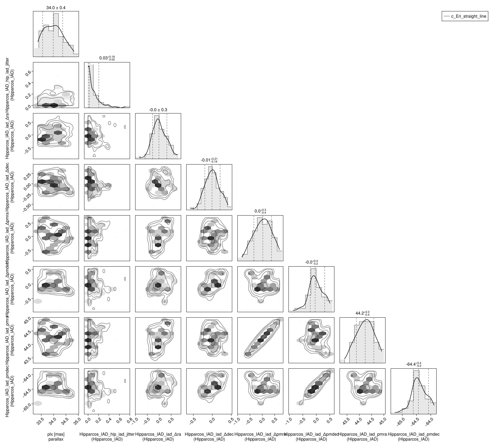
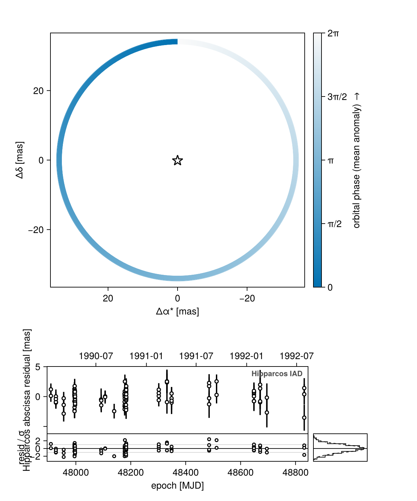
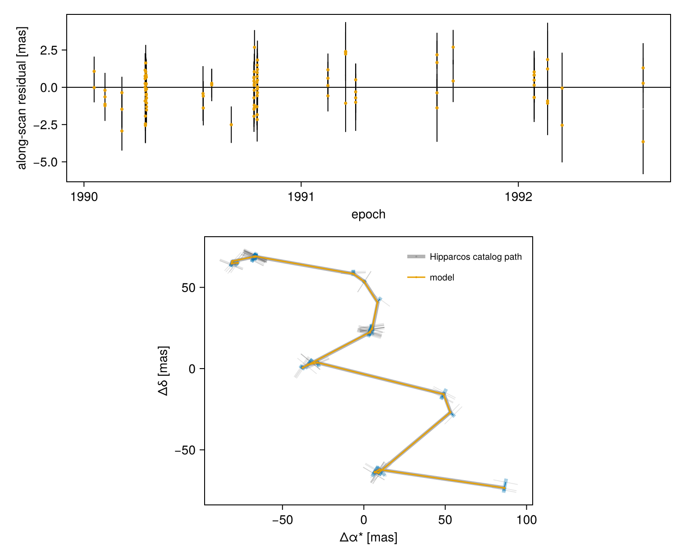
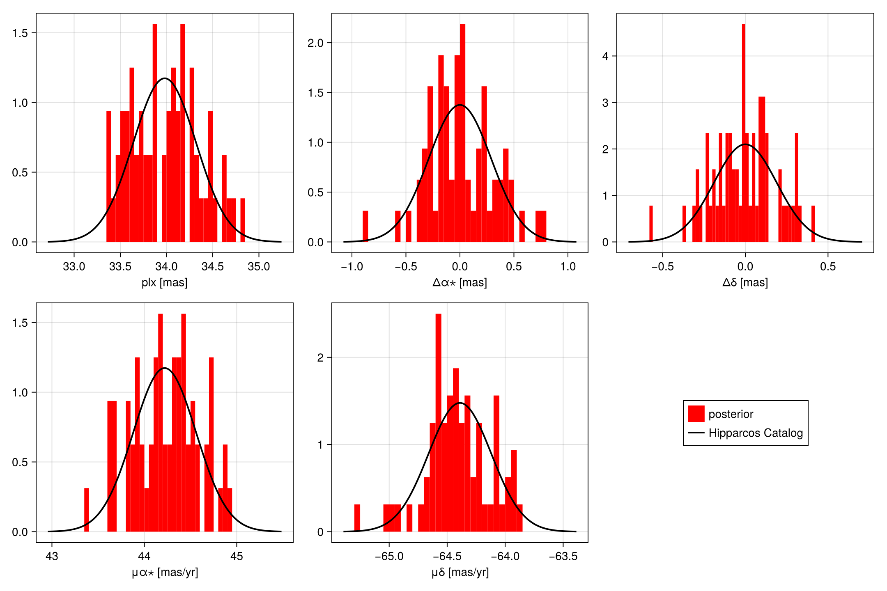
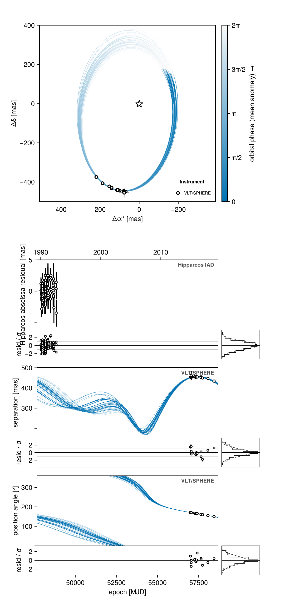
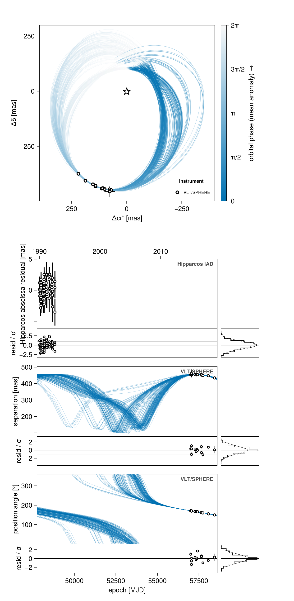

Hipparcos IAD
This tutorial explains how to model Hipparcos intermediate astrometric data (IAD) with HipparcosIADObs. The first example reproduces the catalog values of position, parallax, and proper motion. The second uses Hipparcos to constrain the mass of a directly imaged planet.
G23HObs carries the same abscissae as its :iad_hip channel alongside the Gaia catalog proper motions — reach for HipparcosIADObs when Hipparcos is all you have, or when you want the abscissae without the catalog proper motions.
The frame offset block
The measured abscissa carries the Hipparcos catalog's whole sky path, not just the companion's reflex, so the model has to reproduce all of it. HipparcosIADObs does that with a five-parameter frame offset, declared in the observation's own variables block:
| Variable | Meaning | Default |
|---|---|---|
iad_Δra, iad_Δdec | offset from the catalog position, mas | ~ Uniform(-1000, 1000) |
iad_Δpmra, iad_Δpmdec | offset from the catalog proper motion, mas/yr | ~ Uniform(-1000, 1000) |
iad_Δplx | offset from the system's plx, mas | = 0.0 |
iad_pmra, iad_pmdec | catalog proper motion plus the offset | derived |
hip_iad_jitter | excess per-transit dispersion, added in quadrature | ~ LogUniform(0.001, 100) |
Two things follow from that table and are worth stating plainly:
The parallax signature in the abscissae is anchored to the system's own plx, with no offset added on top. In a Hipparcos-only fit that is what lets the abscissae constrain plx at all: the data see only the sum plx + iad_Δplx, so making both free leaves a perfectly degenerate ridge and the parallax is measured by its prior instead of by the data. Write iad_Δplx ~ Uniform(-10, 10) in your own variables= block when you want the parallax marginalized — which is what G23HObs does, because there Gaia constrains plx and the Hipparcos frame is pure nuisance.
The frame-offset block is a general facility
The iad_Δ* variables are Octofitter's five-parameter FrameOffset: the astrometric solution of one instrument's own reference frame, in the tangent plane about that instrument's catalog position. It exists because Hipparcos measured its abscissae against the Hipparcos frame, not against Gaia's, and the difference between the two is a nuisance the fit has to carry rather than a property of the star.
Five names, all optional and all defaulting to zero, so an instrument that fits only some of them declares only those:
| variable | meaning |
|---|---|
iad_Δra, iad_Δdec | position offset at the instrument's reference epoch [mas] |
iad_Δplx | parallax offset from the anchor [mas] |
iad_pmra, iad_pmdec | proper motion absolute, not an offset [mas/yr] |
The proper motions are absolute because their natural anchor is the instrument catalog's own solution, which a @variables block states directly:
variables = @variables begin
iad_Δpmra ~ Normal(0, 10)
iad_pmra = 44.22 + iad_Δpmra # catalog value plus the offset
endEach scan is then compared against that frame's path plus whatever the source itself is doing — orbital reflex, photocentre wobble — projected onto the scan direction ϕ:
b = (iad_Δra + Δt·iad_pmra + Δα)·cosϕ + (iad_Δdec + Δt·iad_pmdec + Δδ)·sinϕ + ϖ·f_ALHipparcos is the case shipped today; HST FGS is the intended next user, and any instrument with its own frame plugs in the same way. Note the counterpart: there are deliberately no per-source offsets for the Gaia channels, because several G23HObs in one system share one frame, and that shared frame is what ties a wide pair together.
Reproduce Catalog Values
This is the so-called "Nielsen" test from Nielsen et al (2020) and available in Orbitize!.
We start by using a system with a zero-mass companion, so that the only thing the model can do is fit the straight-line motion of the star.
using Octofitter
using Distributions
using CairoMakie
using Pigeons
A = Body(
name="A",
variables=@variables begin
mass = 1.0 # host mass is not important for this example
end
)
planet_b = Body(
name="b",
about=A,
variables=@variables begin
mass = 0.0
e = 0.0
ω = 0.0
a = 1.0
i = 0.0
Ω = 0.0
tp = 0.0
end
)
hip_obs = Octofitter.HipparcosIADObs(
hip_id=21547,
host=A,
companions=(planet_b,),
ref=Barycentre,
renormalize=true, # default: true
)
sys = System(
name="c_Eri_straight_line",
bodies=[A, planet_b],
observations=[hip_obs],
variables=@variables begin
plx ~ Uniform(10, 100)
end
)
model = Octofitter.LogDensityModel(sys)LogDensityModel for System c_Eri_straight_line of dimension 6 and 104 epochs with fields .ℓπcallback and .∇ℓπcallback
Notice how short the system block is: the five-parameter solution the Hipparcos data constrain lives in the observation's own iad_Δ* block, and the system supplies only plx.
Let's initialize the starting point for the chains to reasonable values. Observation variables are addressed by the observation's name with non-identifier characters replaced, so "Hipparcos IAD" becomes Hipparcos_IAD:
init_chain = initialize!(model, (;
plx = 34.0,
observations = (;
Hipparcos_IAD = (;
iad_Δra = 0.0,
iad_Δdec = 0.0,
iad_Δpmra = 0.0,
iad_Δpmdec = 0.0,
),
),
))[ Info: Initializing with 5 fixed parameters
┌ Info: Starting values not provided for all parameters! Guessing starting point using global optimization:
│ num_params = 1
└ num_fixed = 5
┌ Info: Found sample of initial positions
│ logpost_range = (-186.08694608524158, -178.2501302867075)
└ mean_logpost = -180.55423464048246We can now sample from the model using parallel tempering. This should only take about 15 seconds.
chain, pt = octofit_pigeons(model, n_rounds=6)(chain = MCMC chain (64×21×1 Array{Float64, 3}), pt = PT(checkpoint = false, ...))Every example on this page samples with octofit_pigeons. The Hipparcos abscissae are one-dimensional measurements along each scan direction, which leaves the sky-plane solution only weakly pinned down; tempering runs a ladder of chains down to the prior so that separated solutions stay reachable, and it reports Λ and log(Z₁/Z₀) as a check that the ladder actually mixed.
octofit (Hamiltonian Monte Carlo) is a fine substitute for the unimodal posteriors on this page and is much cheaper per sample; seed it with initialize! as above. It is not a substitute for the widely separated modes you get from proper motion anomaly with little orbital coverage (see Proper Motion Anomaly).
Plot the posterior values:
using PairPlots
octocorner(model, chain, small=false)
HipparcosIADObs declares an along_scan plot channel — the per-transit abscissa residual against the catalog's own five-parameter solution — so octoplot draws it with a residual strip and a marginal histogram:
octoplot(model, chain)
hipparcosplot shows the same fit in the instrument's own geometry instead: the catalog sky path, the modelled path including the companion's perturbation, each transit's abscissa line, and the perpendicular residual and formal error drawn against it.
Octofitter.hipparcosplot(model, chain)
We now visualize the model fit compared to the Hipparcos catalog values. The parallax is compared directly; the position and proper motion are compared through the frame offsets, which should recover zero offset and the catalog proper motion respectively:
using LinearAlgebra, StatsBase
# The catalog five-parameter solution this fit should reproduce.
hip_sol = hip_obs.hip_sol
comparisons = (
(; chain=:plx, μ=hip_sol.plx, σ=hip_sol.e_plx, label="plx [mas]"),
(; chain=:Hipparcos_IAD_iad_Δra, μ=0.0, σ=hip_sol.e_ra, label="Δα⋆ [mas]"),
(; chain=:Hipparcos_IAD_iad_Δdec, μ=0.0, σ=hip_sol.e_de, label="Δδ [mas]"),
(; chain=:Hipparcos_IAD_iad_pmra, μ=hip_sol.pm_ra, σ=hip_sol.e_pmra, label="μα⋆ [mas/yr]"),
(; chain=:Hipparcos_IAD_iad_pmdec, μ=hip_sol.pm_de, σ=hip_sol.e_pmde, label="μδ [mas/yr]"),
)
fig = Figure(size=(1080, 720))
ax = nothing
j = i = 1
for prop in comparisons
global i, j, ax
ax = Axis(fig[j, i], xlabel=prop.label)
i += 1
if i > 3
j += 1
i = 1
end
n = Normal(prop.μ, prop.σ)
n0, n1 = quantile.(n, (1e-4, 1 - 1e-4))
nxs = range(n0, n1, length=200)
h = fit(Histogram, chain[prop.chain][:], nbins=55)
h = normalize(h, mode=:pdf)
barplot!(ax, (h.edges[1][1:end-1] .+ h.edges[1][2:end]) ./ 2, h.weights,
gap=0, color=:red, label="posterior")
lines!(ax, nxs, pdf.(n, nxs), label="Hipparcos Catalog", color=:black, linewidth=2)
end
Legend(fig[i-1, j+1], ax, tellwidth=false)
fig
Every panel should sit on top of the catalog curve. A 500-sample run of this model recovers HIP 21547's published five-parameter solution to well within 1σ on all five:
| posterior | Hipparcos catalog | |
|---|---|---|
plx [mas] | 33.99 ± 0.36 | 33.98 ± 0.34 |
iad_Δra [mas] | −0.00 ± 0.28 | 0 ± 0.29 |
iad_Δdec [mas] | 0.01 ± 0.19 | 0 ± 0.19 |
iad_pmra [mas/yr] | 44.21 ± 0.33 | 44.22 ± 0.34 |
iad_pmdec [mas/yr] | −64.39 ± 0.26 | −64.39 ± 0.27 |
HipparcosIADObs defaults to recalibrate=false, so it reproduces the published catalog data as-is. G23HObs applies the Brandt, Michalik & Brandt shift (+0.140 mas on the residuals, 2.25 mas of extra dispersion) unconditionally; pass recalibrate=true here to match its :iad_hip channel exactly.
Constrain Planet Mass
We now allow the planet to have a non-zero mass and a free orbit. We start by specifying relative astrometry data on the planet, collated by Jason Wang and co. on whereistheplanet.com.
astrom_dat = Table(;
epoch = [57009.1, 57052.1, 57053.1, 57054.3, 57266.4, 57332.2, 57374.2, 57376.2, 57415.0, 57649.4, 57652.4, 57739.1, 58068.3, 58442.2],
sep = [454.24, 451.81, 456.8, 461.5, 455.1, 452.88, 455.91, 455.01, 454.46, 454.81, 451.43, 449.39, 447.54, 434.22],
σ_sep = [1.88, 2.06, 2.57, 23.9, 2.23, 5.41, 6.23, 3.03, 6.03, 2.02, 2.67, 2.15, 3.02, 2.01],
pa = [2.98835, 2.96723, 2.97038, 2.97404, 2.91994, 2.89934, 2.89131, 2.89184, 2.8962, 2.82394, 2.82272, 2.79357, 2.70927, 2.61171],
σ_pa = [0.00401426, 0.00453786, 0.00523599, 0.0523599, 0.00453786, 0.00994838, 0.00994838, 0.00750492, 0.00890118, 0.00453786, 0.00541052, 0.00471239, 0.00680678, 0.00401426]
)
astrom_obs = RelAstromObs(
astrom_dat,
target = :b, # the body the measurement is *of*
ref = :A, # …and the body it is measured *against*
name = "VLT/SPHERE",
variables = @variables begin
# Fixed values for this example - could be free variables:
jitter = 0 # mas [could use: jitter ~ Uniform(0, 10)]
northangle = 0 # radians [could use: northangle ~ Normal(0, deg2rad(1))]
platescale = 1 # relative [could use: platescale ~ truncated(Normal(1, 0.01), lower=0)]
end
)Observations are no longer attached to a planet: target= and ref= say what is being measured, and the observation goes in the system's flat observations= list.
We specify our full model. Note that all masses are in solar masses — mjup is a plain multiplicative constant, so a Jupiter-mass prior is written LogUniform(0.1mjup, 100mjup):
A_mass = Body(
name="A",
variables=@variables begin
mass ~ truncated(Normal(1.75, 0.05), lower=0.03) # Msol
end
)
planet_b_mass = Body(
name="b",
about=A_mass,
variables=@variables begin
mass ~ LogUniform(0.1mjup, 100mjup) # Msol (mjup is a constant, not a unit system)
a ~ truncated(Normal(10, 1), lower=0.1)
e ~ Uniform(0, 0.99)
ω ~ Uniform(0, 2pi)
i ~ Sine()
Ω ~ Uniform(0, 2pi)
# `θ` + `epoch` is a phase parametrization the orbit constructor
# understands directly; the total mass comes from the hierarchy.
θ ~ Uniform(0, 2pi)
epoch = 58442.2
end
)
hip_obs_mass = Octofitter.HipparcosIADObs(
hip_id=21547,
host=A_mass,
companions=(planet_b_mass,),
ref=Barycentre,
)
sys_mass = System(
name="cEri",
bodies=[A_mass, planet_b_mass],
observations=[hip_obs_mass, astrom_obs],
variables=@variables begin
plx ~ Uniform(20, 40)
end
)
model = Octofitter.LogDensityModel(sys_mass)LogDensityModel for System cEri of dimension 14 and 118 epochs with fields .ℓπcallback and .∇ℓπcallback
Initialize the starting points, and confirm the data are entered correctly:
init_chain = initialize!(model, (;
plx = 34.0,
observations = (;
Hipparcos_IAD = (;
iad_Δra = 0.0,
iad_Δdec = 0.0,
iad_Δpmra = 0.0,
iad_Δpmdec = 0.0,
),
),
))
octoplot(model, init_chain)
Now we sample:
chain, pt = octofit_pigeons(model, n_rounds=8, explorer=SliceSampler())
chainChains MCMC chain (256×25×1 Array{Float64, 3}):
Iterations = 1:1:256
Number of chains = 1
Samples per chain = 256
Wall duration = 45.73 seconds
Compute duration = 45.73 seconds
parameters = plx, A_mass, b_mass, b_a, b_e, b_ω, b_i, b_Ω, b_θ, b_epoch, Hipparcos_IAD_hip_iad_jitter, Hipparcos_IAD_iad_Δra, Hipparcos_IAD_iad_Δdec, Hipparcos_IAD_iad_Δpmra, Hipparcos_IAD_iad_Δpmdec, Hipparcos_IAD_iad_Δplx, Hipparcos_IAD_iad_pmra, Hipparcos_IAD_iad_pmdec, VLT_SPHERE_jitter, VLT_SPHERE_northangle, VLT_SPHERE_platescale
internals = loglike, logpost, logprior, pigeons_logpotential
Use `describe(chains)` for summary statistics and quantiles.
octoplot(model, chain)
We see that we constrained both the orbit and the parallax. The mass is not strongly constrained by Hipparcos alone; chain["b_mass"] is in solar masses, so divide by mjup to read it in Jupiter masses:
using StatsBase
mass_mjup = chain["b_mass"][:] ./ mjup
println("b mass [Mjup]: ", round.(quantile(mass_mjup, (0.16, 0.5, 0.84)), digits=2))b mass [Mjup]: (0.7, 9.01, 19.43)See Also
- Joint Gaia-Hipparcos (G23H) — the same abscissae as one channel of a joint Gaia + Hipparcos fit.
- Proper Motion Anomaly — HGCA-style proper motion anomaly.